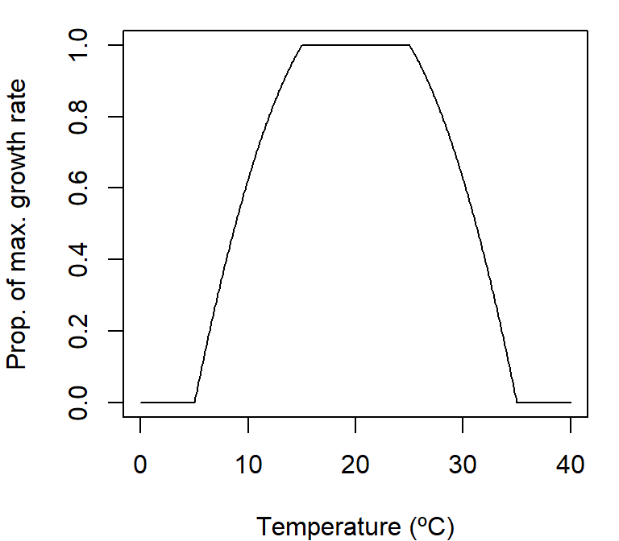
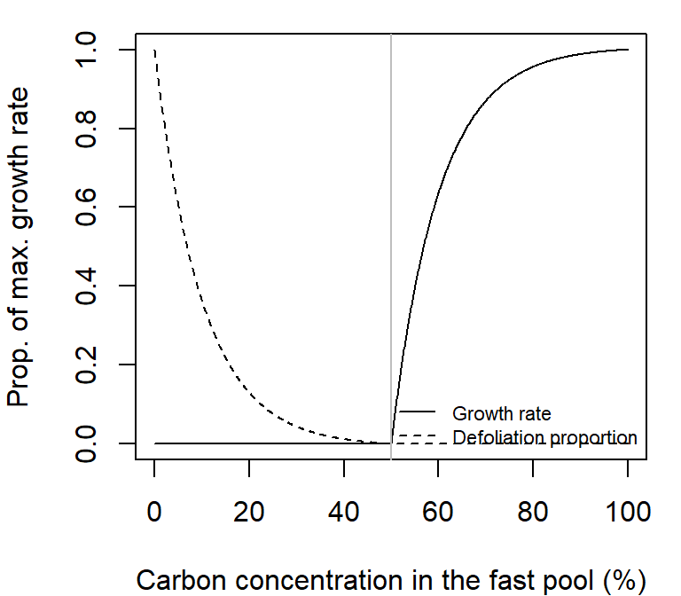
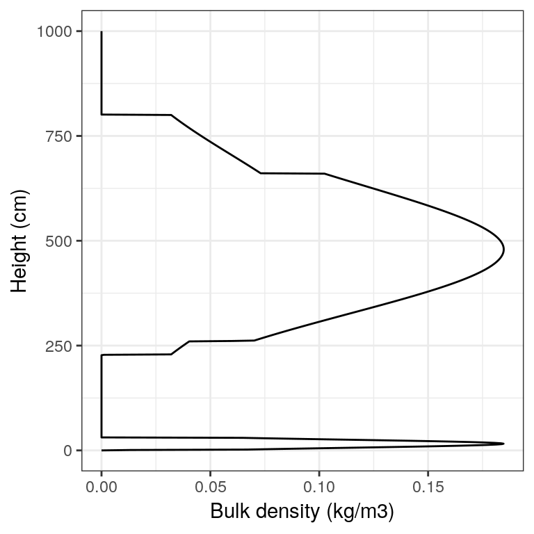
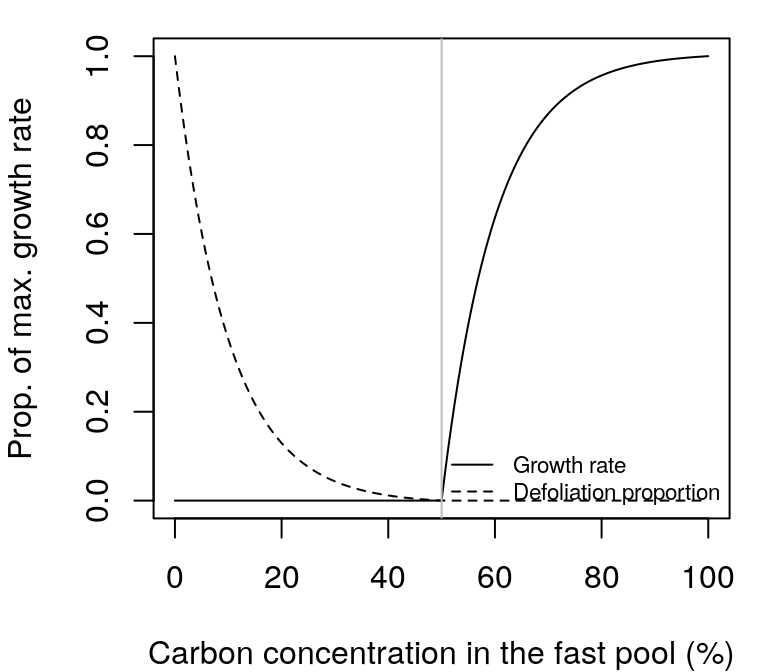

Chapter 16 Sapwood conversion to heartwood, embolism and growth
16.1 Sapwood conversion to heartwood, embolism and growth
Prentice, Sykes, and Cramer (1993) assumed a constant annual rate of 4% for the conversion from sapwood to heartwood. Similarly, Sitch et al. (2003) assumed a sapwood annual turnover rate of 5% for all biomes. A reasonable value for maximum daily turnover rate would be (assuming an annual rate 4.5%): \[\begin{equation} 1-0.955^{(1/365)} = 0.0001261398 \end{equation}\] The actual proportion of sapwood area that is transformed into heartwood is: \[\begin{equation} p_{heartwood} = \frac{0.0001261398}{1+15\cdot e^{-0.01\cdot H}} \end{equation}\] where 0.01 is a constant causing short plants to have slower turnover rates.
Sapwood turnover is applied at the same rate in evergreen and deciduous species. The amount of sapwood that is converted to heartwood every day, \(\Delta SA_{turnover}\), is thus: \[\begin{equation} \Delta SA_{turnover} = SA \cdot p_{heartwood} \end{equation}\] Before applying either growth or cavitation the model determines the extent to which cell turgor allows growth using a negative exponential function: \[\begin{equation} f_{turgor}(\Psi_{leaf}) = 1 - \left[e^{(\Psi_{leaf}/\Psi_{tlp})-1}\right]^5 \end{equation}\] where \(f_{turgor}(\Psi_{leaf})=0\) if \(\Psi_{leaf} > \Psi_{tlp}\). The following figure illustrates the function for \(\Psi_{tlp}=-1.5\) MPa: 
If \(f_{turgor}(\Psi_{leaf})>0\) growth is applied, but there can be leaf area losses from sapwood turnover, whereas if \(f_{turgor}(\Psi_{leaf}) = 0\) growth does not occur and cavitation is possible. The following two subsection detail the behavior of the growth model in each case.
16.2 Growth and turnover during non-drought periods
If (i.e.\(f_{turgor}(\Psi_{leaf})>0\)) the model determines growth, expressed as formation of new sapwood and leaf area increase. Daily sapwood growth rate is assumed to depend on the availability of carbon (i.e., \(C_{available}>0\)), but also requires temperature to be within acceptable ranges (because it affects biochemical rates) and minimum turgor for cell elongation.
The adoption of the pipe model (Shinozaki et al. 1964) implies that the addition of new foliage requires building a proportional amount of xylem conduits and fine roots. This is represented in the model by a species-specific Huber value \(Hv\) (in \(m^2·m^{-2}\)). Since all living biomass equations are linearly related to sapwood area, the total cost in g C per 1 \(cm^2\) of newly formed sapwood area: \[\begin{eqnarray} C_{cost,leaf} &=& 0.3 \cdot \frac{0.1\cdot Hv}{SLA}\\ C_{cost,stem} &=& (H + Z) \cdot W_{dens} \cdot W_{C}\\ C_{cost,root} &=& C_{cost,leaf}/2.5\\ C_{cost,overall} &=& 1.3 \cdot (C_{cost,leaf}+C_{cost,stem} + C_{cost,root}) \end{eqnarray}\] where 0.1 is needed to express \(C_{cost,leaf}\) in units of \(g · cm^{-2}\) and factor 1.3 is used in the calculation of \(C_{cost,overall}\) because growth respiration is assumed to be a constant proportion of all new tissue growth (30% of new tissue is respired, Ryan 1990). Note that carbon allocation to the three compartments does not follow constant proportions for different plants because the larger the size of a plant, the more C will need to be allocated in the vascular system per unit of sapwood area increment, and hence the proportion of C allocated to leaves and fine roots will decrease. The maximum increase in sapwood area according to the availability of C is: \[\begin{equation} \Delta SA_{available} = \frac{C_{available}}{C_{cost,overall}} \end{equation}\]
Several sink limitations may occur. One is the turgor limitation, which is represented in the model by \(f_{turgor}\). If carbon pools are considered, then the C concentration in the fast pool (i.e. \(C_{fast}/C_{fast, \max}\)) may also limit the rate of growth. We model this sink limitation by assuming that the maximum rate of growth will decrease with decreasing concentration, following a sigmoidal function: \[\begin{equation} f_{conc} = \frac{1}{1+\exp \left(-5 \cdot \frac{(C_{fast}/C_{fast, \max})-0.5}{0.5}\right)} \end{equation}\]

Obviously, if carbon pools are not considered \(f_{conc} = 1\).
Growth modulation due to temperature is incorporated through \(f_{temp}(T_{mean})\), using a truncated parabolic function as in Poyatos et al. (2007): \[\begin{equation} f_{temp}(T) = \frac{(T-T_{low}) \cdot (T_{high}-T)}{(T_{opt}-T_{low}) \cdot (T_{high}-T_{opt})} \end{equation}\] where \(0 \leq f_{temp}(T) \leq 1\), \(T_{low}\) and \(T_{high}\) minimum and maximum temperature values for growth and \(T_{opt}\) is the optimum growth temperature.

The rate of daily increase in sapwood area taking into account sink limitations is (\(\Delta SA_{sink}\); \(cm^2\)): \[\begin{equation} \Delta SA_{sink} = RGR_{\max} \cdot SA \cdot f_{turgor}(\Psi_{leaf}) \cdot f_{conc} \cdot f_{temp}(T_{mean}) \end{equation}\] where \(RGR_{\max}\) is the user-defined, species-specific maximum relative growth rate in sapwood area (in \(cm^2·cm^{-2}\)), which can incorporate nutrient deficiency effects.
The final growth rate of sapwood area per individual, \(\Delta SA_{growth}\) (in \(cm^2\)), is found by combining the potential increase in sapwood area according to availability and cost with the sink limitations: \[\begin{equation} \Delta SA_{growth} = \min(\Delta SA_{available}, \, \Delta SA_{sink}) \end{equation}\] If carbon pools are considered the actual carbon growth consumption (i.e. \(C_{cost,overall} \cdot \Delta SA_{growth}\)) has to be subtracted from \(C_{fast}\): \[\begin{equation} C_{fast} = C_{fast} - C_{cost,overall} \cdot \Delta SA_{growth} \end{equation}\]
Sapwood area is updated considering both new sapwood formation and sapwood conversion to heartwood (\(\Delta SA_{turnover}\)): \[\begin{equation} SA = SA + \Delta SA_{growth} - \Delta SA_{turnover} \end{equation}\] After updating sapwood area, the model updates living, expanded and dead leaf area accordingly: \[\begin{eqnarray} LAI^{live} &=& LAI^{live} + N \cdot (\Delta SA_{growth} - \Delta SA_{turnover}) \cdot Hv \\ LAI^{\phi} &=& LAI^{live}\,\cdot\phi \\ LAI^{dead} &=& LAI^{dead} + N \cdot \Delta SA_{turnover} \cdot Hv \end{eqnarray}\]
During non-drought periods the state variables regulating drought effects are kept at initial values (i.e. \(\Psi_{\min} = 0\) and \(LAI^{predrought} = LAI^{live}\)).
16.3 Leaf area losses during drought-periods
During drought-periods (i.e. if \(f_{turgor}(\Psi_{leaf})=0\)) cavitation may occur. However, cavitation is applied at the leaf area level and not at the sapwood area level. During drought periods reductions of live leaf area can come from either sapwood conversion into heartwood or cavitation. First, the model compares the current \(\Psi_{leaf}\) value with \(\Psi_{\min}\) the minimum potential experienced since drought started: \[\begin{equation} \Psi_{\min} = \min(\Psi_{leaf}, \, \Psi_{\min}) \end{equation}\] Then the model determines the proportion of embolized conducts as the complement of hydraulic conductance corresponding to \(\Psi_{\min}\), relative to the maximum hydraulic conductance. If the transpiration mode is “Simple”, this is done using a whole-plant conductance function: \[\begin{equation} P_{embolism}=1- K(\Psi_{\min}) = \exp \left \{\ln{(0.5)}\cdot \left[ \frac{\Psi_{\min}}{\Psi_{extract}} \right] ^r \right \} \end{equation}\] where \(\Psi_{extract}\) is the potential at which conductance is 50% of maximum and \(r=3\). If the transpiration mode is “Complex”, \(P_{embolism}\) is calculated using the stem-leaves vulnerability curve: \[\begin{equation} P_{emb}= 1- \frac{k_{stem}(\Psi_{\min})}{k_{stem}(0)} = 1 - \exp \left \{-\left[ \frac{\Psi_{\min}}{d_{stem}} \right] ^{c_{stem}} \right \} \end{equation}\] Since leaf area reduction may also come from sapwood conversion into heartwood, the model determines which process leads to a larger reduction in leaf area: \[\begin{equation} LAI^{live} = \min(LAI^{live} - N \cdot \Delta SA_{turnover} \cdot Hv , \, LAI^{predrought} \cdot (1 - P_{emb})) \end{equation}\] and expanded leaf area (\(LAI^{\phi}\)) and dead leaf area (\(LAI^{dead}\)) are modified accordingly.
16.4 Transfer between carbon pools
If two carbon pools are considered then carbon can be transferred from one to the other. The model assumes that the direction of transfer depends on the C concentration in the fast pool. When the pool is at full capacity its C should be converted to long-term storage, whereas if the pool is empty C stored in the slow pool should be mobilised. The relative rate of transfer (\(r_{transfer}\); in \(g C·g C^{-1}\)) is modelled using a sigmoidal function: \[\begin{equation} r_{transf} = 0.1 \cdot \frac{2}{1+\exp \left(-5 \cdot \frac{(C_{fast}/C_{fast, \max})-0.5}{0.5}\right)}-1 \end{equation}\]

where \(0.1\) indicates that the maximum daily transfer rate is 10% of the source C pool size. If \(r_{transf}<0\) then \(-r_{transf} \cdot C_{slow, \max}\) g of carbon are taken from the slow C pool and 90% of this amount is added into the fast C pool (the remaining 10% is assumed to be the transfer cost). Similarly, if \(r_{transf}>0\) then \(r_{transf} \cdot C_{fast, \max}\) g of carbon are taken from the fast C pool and 90% of this amount is added into the slow C pool (again, the remaining 10% is assumed to be the transfer cost). The amounts of C transferred are also limited by the amount that would be needed to fill the sink pool (i.e., if the sink pool is already full, no carbon is transferred).
16.5 Update of maximum stem conductance
The inclusion of \(Hv\) in the initialization of \(SA\) and in growth equations causes sapwood area and leaf area to maintain a constant ratio equal to \(Hv\). However, this rule may be broken by leaf phenology or when losing leaves because of drought stress. Leaf area reductions cause transpirational demand to be reduced accordingly. Moreover, in the case of Complex’s transpiration mode leaf loss causes variations in leaf area to sapwood area ratio, which may become lower than \(Hv\) and, hence, maximum stem hydraulic conductance may increase. Tree size controls much of the variation in stem hydraulic conductance, since hydraulic path length increases with tree height. We modelled stem conductance per leaf area unit (\(k_{stem, \max}\); in \(mmol·m^{-2}·s^{-1}·MPa^{-1}\)) as a function of species-specific xylem conductivity (\(k_{xylem, \max}\); in \(kg·m^{-1}·s^{-1}·MPa^{-1}\)), leaf area to sapwood area ratio and tree height (Christoffersen et al. 2016): \[\begin{equation} k_{stem, \max} = \frac{1000}{0.018} \cdot \frac{k_{xylem, \max} \cdot (SA/10000)}{(H/100) \cdot LA^{\phi}} \cdot \chi_{taper} \end{equation}\] where \(\chi_{taper}\) is a factor to account for taper of xylem conduit with height (Savage et al. 2010; Christoffersen et al. 2016), 0.018 is the molar weight of water (in kg·mol\(^{-1}\)). This way, if the leaf-to-sapwood area ratio decreases with tree height, as has been documented in several species (McDowell et al. 2002), the decreasing conductance effects with height may be partially overcome (Christoffersen et al. 2016). A drought-induced decrease in \(LA^{\phi}\) alleviate drought effects (i.e. a lower decrease in water potential across the stem for the same flow) because of an increase in conductance.
Bibliography
Christoffersen, Bradley O., Manuel Gloor, Sophie Fauset, Nikolaos M. Fyllas, David R. Galbraith, Timothy R. Baker, Lucy Rowland, et al. 2016. “Linking hydraulic traits to tropical forest function in a size-structured and trait-driven model (TFS v.1-Hydro).” Geoscientific Model Development Discussions 0 (June):1–60. https://doi.org/10.5194/gmd-2016-128.
Prentice, I. Colin, Martin T. Sykes, and Wolfgang Cramer. 1993. “A simulation model for the transient effects of climate change on forest landscapes.” Ecological Modelling 65 (1-2):51–70. https://doi.org/10.1016/0304-3800(93)90126-D.
Savage, V M, L P Bentley, B J Enquist, J S Sperry, D D Smith, P B Reich, and E I von Allmen. 2010. “Hydraulic trade-offs and space filling enable better predictions of vascular structure and function in plants.” Proceedings of the National Academy of Sciences of the United States of America 107 (52):22722–7. https://doi.org/10.1073/pnas.1012194108.
Sitch, S., B. Smith, I. C. Prentice, a. Arneth, a. Bondeau, W. Cramer, J. O. Kaplan, et al. 2003. “Evaluation of ecosystem dynamics, plant geography and terrestrial carbon cycling in the LPJ dynamic global vegetation model.” Global Change Biology 9 (2):161–85. https://doi.org/10.1046/j.1365-2486.2003.00569.x.